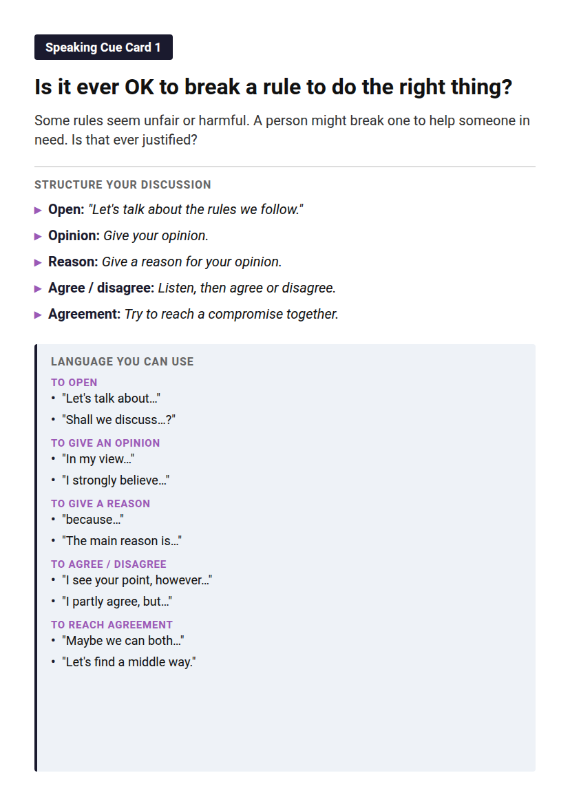
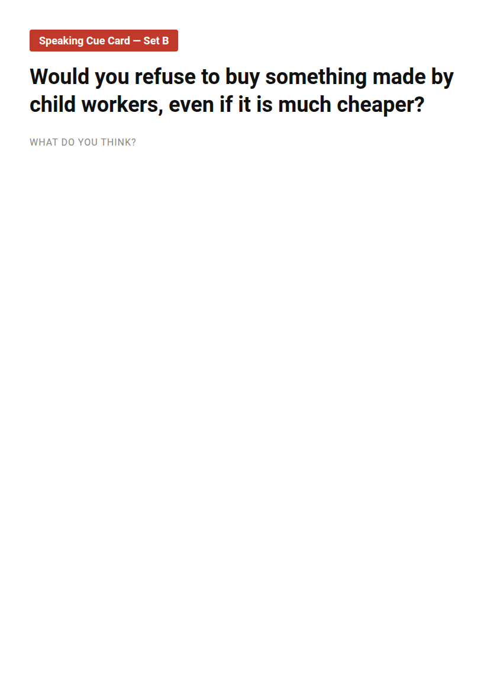

Why is this lesson important?
- Colonisation shaped the world — including Thailand.
- The opium trade is a controversial chapter of history.
- Thailand is the only Southeast Asian country never colonised.
Listen and write the questions
You will hear eight questions.
Write each question. You will hear each one twice.
Dictation tape
Check your dictation — Part 1
What is the key difference between trading with a country and colonising it?
How did the British justify colonisation?
Check your dictation — Part 2
Why was Britain spending so much silver on Chinese tea, silk, and porcelain, and how did the opium trade fix this problem?
What excuse did Britain use to start the First Opium War after Lin Zexu destroyed their opium?
Check your dictation — Part 3
How did the opium trade affect ordinary Chinese families?
What does extraterritoriality mean, and why did it make the Chinese angry?
Check your dictation — Part 4
How did King Mongkut's approach to the British differ from the Chinese emperor's approach?
What strategy did King Chulalongkorn use to keep Thailand independent while giving up forty percent of its territory?
Now listen to the podcast
A history podcast: It's Academic.
Host Jack Smith talks to teen researcher Ebony Mills.
There are four parts.
Listen to each part twice. Then answer the questions.
Podcast — Part 1
You will hear each tape 2 times. Captions off first time; on second time.
Listen to Part 1
Podcast — Part 2
You will hear each tape 2 times. Captions off first time; on second time.
Listen to Part 2
Podcast — Part 3
You will hear each tape 2 times. Captions off first time; on second time.
Listen to Part 3
Podcast — Part 4
You will hear each tape 2 times. Captions off first time; on second time.
Listen to Part 4
Answers — Part 1
| Question | What is the key difference between trading with a country and colonising it? |
| Answer | Trading means voluntary exchange. Colonisation means taking control — making laws, collecting taxes, and using the land and people. |
| Question | How did the British justify colonisation? |
| Answer | They said they were bringing civilisation, education, and order. But really they were taking resources and power. |
Answers — Part 2
| Question | Why was Britain spending so much silver on Chinese tea, silk, and porcelain, and how did the opium trade fix this problem? |
| Answer | Britain bought tea, silk, and porcelain and had to pay in silver, which drained their economy. Growing opium in India and selling it to China reversed the silver flow. |
| Question | What excuse did Britain use to start the First Opium War after Lin Zexu destroyed their opium? |
| Answer | Britain said Lin Zexu destroying their opium was an attack on free trade — that was the excuse for war. |
Answers — Part 3
| Question | How did the opium trade affect ordinary Chinese families? |
| Answer | Millions became addicted. Fathers could not work. Families lost everything. The government could not stop it. |
| Question | What does extraterritoriality mean, and why did it make the Chinese angry? |
| Answer | British people in China were judged by British courts, not Chinese law. So they could break the law and walk away — China lost control of its own land. |
Answers — Part 4
| Question | How did King Mongkut's approach to the British differ from the Chinese emperor's approach? |
| Answer | The Chinese emperor fought back and was defeated. King Mongkut welcomed the British envoy, spoke English, showed his library of Western books, and negotiated. |
| Question | What strategy did King Chulalongkorn use to keep Thailand independent while giving up forty percent of its territory? |
| Answer | He gave away far-off border lands he barely controlled — to France and Britain — to protect the heartland. A sacrifice, not a defeat. |
Strategy: Close the discussion
| Do | End the talk by stating the compromise you both accept. |
| Why | A clear resolution shows you understood and agreed. |
| How | Summarise the middle point. Then say: "So, can we compromise and say ...?" |
Card 1 — the resolution
Card 1: Is it ever OK to break a rule to do the right thing?
| Partner A | "Breaking a rule is always wrong." |
| Partner B | "I see your point, but sometimes the rule is unfair." |
| Resolution | "So, can we compromise and say we decide by the rule and the reason?" |
Resolution — closing the discussion
State the agreement: "So, can we compromise and say ... ?"
Or: "Could we agree that ... ?" "Maybe we can both ..."
Confirm: "So we both think ..., right?"
Close: "Great, we agree on that."
Speed dating — Card Set A

Pair up. One card each. Discuss for 2 minutes.
Use the structure and the language on the card. Then move to the next partner.
Speed dating — Card Set B

Now no language help. Talk for 2 minutes.
Use your own ideas. Then move to the next partner.